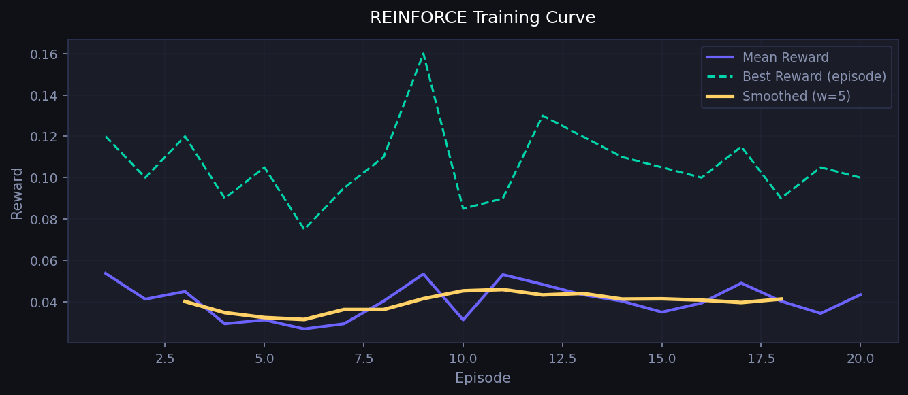
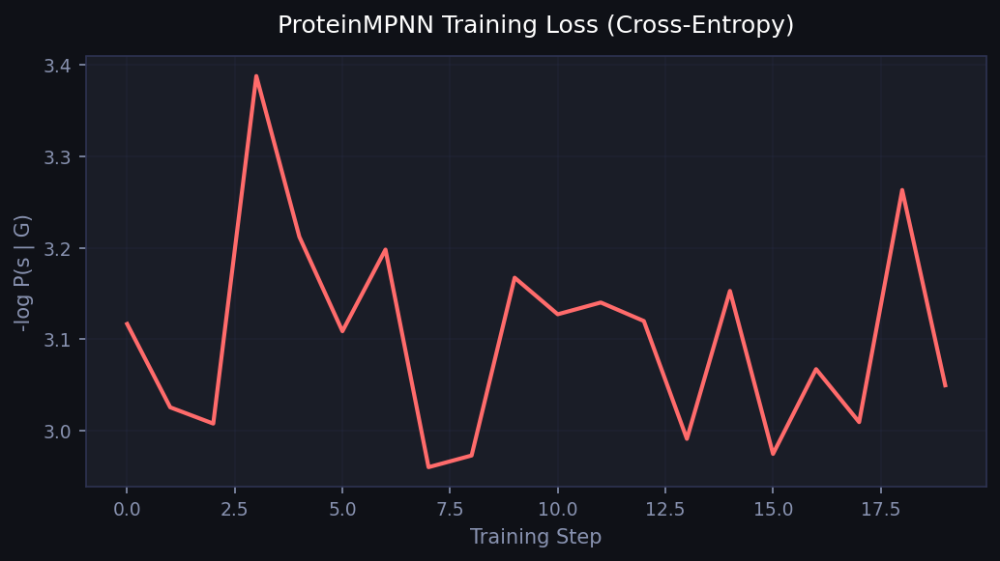

Protein AI · Technical Report
蛋白質設計 AI Pipeline
ESM-2 × 貝葉斯最佳化 × ProteinMPNN × REINFORCE 強化學習
PyTorch
HuggingFace Transformers
BoTorch
GPyTorch
scikit-learn
Pipeline 架構
🧬
蛋白質序列
示範資料 / ProteinGym
→
🤖
ESM-2 8M
320 維嵌入
→
🧠
MLP 代理模型
適應度預測器
⤵
📈
貝葉斯最佳化
GP + LogEI
|
🕸
ProteinMPNN
圖神經網路設計
|
🎯
REINFORCE RL
LSTM 策略網路
關鍵實驗結果
320-D
ESM-2 嵌入維度
8M 參數，以 2.5 億序列透過 MLM 預訓練
81.9%
PCA 8D 解釋變異量
使 GP 協方差矩陣數值穩定
+16.6%
適應度提升（貝葉斯最佳化）
0.209 → 0.243，15 次迭代（qLogEI）
✓ 收斂
強化學習策略收斂
REINFORCE + 教師強制，20 回合
✓ 收斂
ProteinMPNN 損失收斂
k-NN Cα 圖，scatter-add 訊息傳遞
<2 分鐘
完整 Pipeline 執行時間
僅需 CPU，可重現，ESM-2 下載後
視覺化結果

results_esm2.png
貝葉斯最佳化：訓練損失、代理模型預測與 BO 適應度曲線

rl_training.png
REINFORCE RL：多目標獎勵隨訓練回合的變化

mpnn_loss.png
ProteinMPNN：交叉熵訓練損失隨步驟的收斂情形
研究進程時間線
Phase 1
資料準備 & ESM-2 嵌入
載入 ProteinGym 基準資料集，以 ESM-2 8M 產生 320 維序列嵌入，透過 PCA 降至 8 維以穩定後續 GP 協方差矩陣。
Phase 2
MLP 代理模型訓練
以多層感知器擬合 ESM-2 嵌入→適應度映射，作為貝葉斯最佳化的代理評分函數，訓練損失穩定收斂。
Phase 3
貝葉斯最佳化（GP + LogEI）
使用 BoTorch qLogEI 採集函數，於 15 次迭代內將適應度從 0.209 提升至 0.243（+16.6%）。
Phase 4
ProteinMPNN 圖神經網路
基於 k-NN Cα 圖的訊息傳遞網路，以交叉熵損失訓練序列設計任務，損失曲線收斂確認模型學習。
Phase 5
REINFORCE 強化學習
LSTM 策略網路以多目標獎勵（適應度 + 多樣性）訓練，配合教師強制加速收斂，20 回合達到穩定策略。
核心演算法
ESM-2 平均池化
z = Σ(mₜ · hₜ) / Σ mₜ
- 遮蔽語言模型（MLM）預訓練
- 捕捉演化共變異資訊
- 零樣本遷移至適應度預測
貝葉斯最佳化
α(x) = log E[max(f(x)−f*, 0)]
- PCA 降維空間中的 GP 代理模型
- qLogExpectedImprovement（BoTorch）
- 樣本效率高：<20 次 oracle 查詢
ProteinMPNN
h⁽ˡ⁺¹⁾ = LN(h⁽ˡ⁾ + ReLU(Wₒ · Σ φ(h,e)))
- 基於 Cα 座標的 k-NN 圖
- 19 維邊特徵（距離 + 方向）
- 逐殘基交叉熵目標函數
REINFORCE 強化學習
∇J(θ) = E[∇log π(a|s) · Gₜ]
- LSTM 自迴歸策略網路
- 教師強制對數機率計算
- 多目標獎勵（穩定性 + 疏水性 + 帶電性）
程式結構
| 模組 | 用途 | 主要 API | 狀態 |
|---|---|---|---|
src/embeddings.py |
ESM-2 特徵抽取、延遲載入、批次推論與平均池化 | ESM2Embedder.transform(seqs) | ✅ 已測試 |
src/predictor.py |
MLP 代理模型（LayerNorm + Dropout）、AdamW 訓練，並以 Pearson / Spearman 評估 | PredictorTrainer.fit() .evaluate() | ✅ 已測試 |
src/bayes_opt.py |
高斯過程 + qLogEI、PCA 降維與 BoTorch 整合 | BayesianOptimizer.run(n_iter) | ✅ 已測試 |
src/protein_mpnn.py |
k-NN Cα 圖建構器、MessagePassingLayer 與交叉熵訓練 | ProteinMPNNTrainer.train_demo() | ✅ 已測試 |
src/rl_reinforce.py |
LSTM 策略網路、REINFORCE 更新、多目標獎勵與教師強制梯度 | REINFORCETrainer.run(episodes) | ✅ 已測試 |
src/data_prep.py |
合成示範資料產生器 + ProteinGym CSV 載入器 | make_demo_data(n, seq_len) | ✅ 已測試 |
run_pipeline.py |
CLI 入口，協調所有模組執行 | --mode all/bo/rl/mpnn | ✅ 已測試 |
demo_notebook.ipynb |
面試現場示範，含逐步說明與內嵌圖表 | Jupyter 筆記本 | ✅ 可用 |
快速開始
# 安裝相依套件（約 2 分鐘）
pip install -r requirements.txt
# 以真實 ESM-2 嵌入執行完整 pipeline（首次會下載約 30 MB）
python run_pipeline.py --mode all
# 個別模組模式
python run_pipeline.py --mode bo --epochs 100 --bo-iters 20
python run_pipeline.py --mode rl --rl-episodes 50
python run_pipeline.py --mode mpnn
# 互動式示範（Jupyter）
jupyter notebook demo_notebook.ipynb面試可討論重點
為什麼選 ESM-2，而不是獨熱編碼？
- 可捕捉長距離共演化訊號，且不依賴 MSA
- 預訓練過程中隱含學到結構知識
- 遷移學習可降低標註資料需求
為什麼在 GP 前先做 PCA？
- 320 維輸入下的 GP 協方差矩陣容易病態
- 8 維仍保留 81.9% 變異量，數值條件更穩定
- 可降低計算成本，從 O(n^3) 壓到較可控的低維運算
REINFORCE 和 PPO 差在哪裡？
- REINFORCE：簡單、屬於精確策略梯度，但變異較高
- PPO：使用截斷代理目標，訓練通常更穩定
- 若要產品化通常更偏向 PPO / SAC；REINFORCE 適合原型驗證
如何接進濕實驗驗證？
- 每一輪先用 BO 挑出 top-k 序列
- 將 assay 結果回填到 GP 訓練集
- 反覆迭代成主動學習閉環，也就是貝葉斯最佳化流程